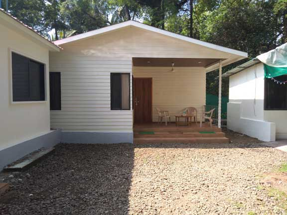
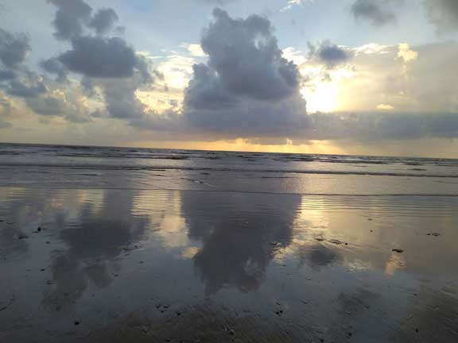

A little closer to nature.
A relaxed guest house for families and groups, tucked among the palms near Varsoli Beach, Alibaug.

Space to rest. Nature to enjoy. Time together.
Varsoli Beach, near Alibaug, is appreciated for its natural beauty and peaceful coastal atmosphere. Despite its proximity to Alibaug town, Varsoli retains pockets of coconut and areca palm cultivation, making it a refreshing place to pause and unwind.
Nisarg Family Guest House is about a two-minute walk from the beach and is surrounded by greenery. If you want to take a break from a busy schedule, enjoy excursions with family members or spend quality time with your group, our guest house offers a comfortable base for your visit.
To preserve a calm atmosphere, Nisarg primarily welcomes families, family groups and corporate groups. We aim to help guests enjoy a relaxed stay with essential amenities and friendly assistance.
Comforts for an easy stay.
Here are the facilities and guest services described by the property. Please confirm current availability when enquiring.
11 well-furnished AC and non-AC rooms, including self-contained room options.
Large LED TV and attached bathroom facilities are listed among room features.
Wi-Fi is listed as a guest amenity; ask about current coverage and access.
Vegetarian and non-vegetarian meals, breakfast and tea service are described as available.
Ample parking space is listed for guests visiting the property.
Staff can try to help with taxi or auto-rickshaw arrangements, two-wheeler rentals and sightseeing suggestions.
Discover the easy-going side of Alibaug.
Varsoli offers a long shoreline, coastal shade and space for leisurely walks. Visitors can enjoy the sea breeze, take in the view or spend a relaxed day by the water. Activities and swimming conditions vary with weather, tides and local advisories, so always follow local guidance.
The beach area has featured visitor amenities such as children's play equipment, shaded seating, parking and Wi-Fi. Facilities may change over time; check locally before relying on a specific amenity.
Explore Varsoli photos →
Let’s plan your visit.
Speak with us about your dates, group size and room preferences.